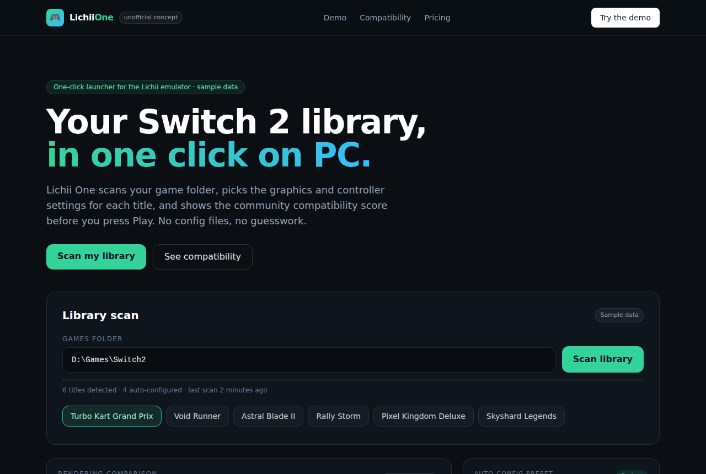

Lichii: an experimental Switch 2 emulator, 10k stars in 3 weeks
zortos293/Lichii · LifestyleGPL-3.0⭐ 10,025

What it is. Lichii (zortos293/Lichii) is a C++ Nintendo Switch and Switch 2 emulator that started 21 days ago and already has ~10k stars. It is a fork that builds on Eglantine, Eden, yuzu and Sudachi, per the README, and the author calls it "VERY experimental." You need your own dumped games, keys and firmware — none of that ships with it.
Why it's taking off. A Switch 2 emulator that runs at all is news, and a working build spreads fast on X and Reddit. The repo also ships a small idea that matters: a community compatibility site (lichii.zortos.me) where players post per-game reports, plus an in-client "Submit compatibility report" flow that pre-fills your machine, GPU and settings but uploads nothing without consent. That's the right instinct for emulator tooling — real hardware data, opt-in.
Where the product opportunity is. Not in the emulator itself. GPL-3.0 inherited from yuzu/Eden, plus Nintendo's well-documented litigation history against emulator projects, makes paid or closed distribution a bad bet. The safer angle is the layer around it: a launcher that detects your games, picks sane graphics and controller defaults, shows a compatibility score before you spend 20 minutes booting, and links to the exact build that works. Charge for convenience and support, not for the emulator. Even then, treat it as a content play first and a product second.
Today's top 5
| # | Repo | Buzz | Startup | Overall |
|---|---|---|---|---|
| 1 | zortos293/Lichii | 9.0 | 5.45 | 7.08 |
| 2 | sybil-solutions/skill-distill | 6.33 | 7.35 | 6.57 |
| 3 | obra/superpowers | 7.33 | 7.15 | 6.42 |
| 4 | EL4CTEO/fast-anything | 7.0 | 6.85 | 6.29 |
| 5 | ccch1mneyyy/dsh-Go | 7.67 | 5.95 | 6.23 |